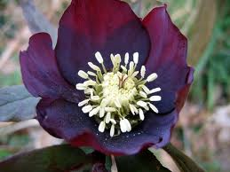

Hellébore noir ou Rose de Noël ou Rose d'hiver

Hellébore noir ou Rose de Noël ou Rose d'hiver (Helleborus niger de la famille des Renonculacées)
Attention : hautement toxique par ingestion pour le Korat !
Partie toxique pour les chats en général et le Korat en particulier :
Toute la plante.
Symptômes du processus pathologique :
Salivation, diarrhée, vomissements, coliques, paralysies, excitation, dilatation des pupilles.
Origine de la toxicité (principe actif) :
Saponosides et hétérosides stéroïdiques cardiotoxiques soit hellébrine et hellébroside, protoanémonine.